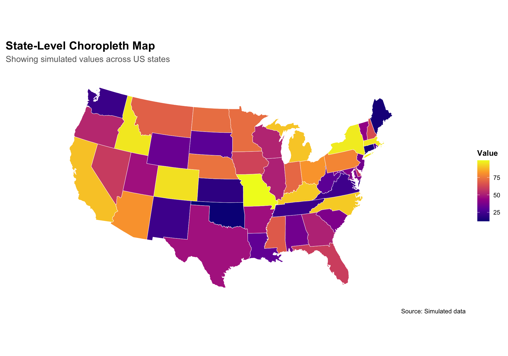
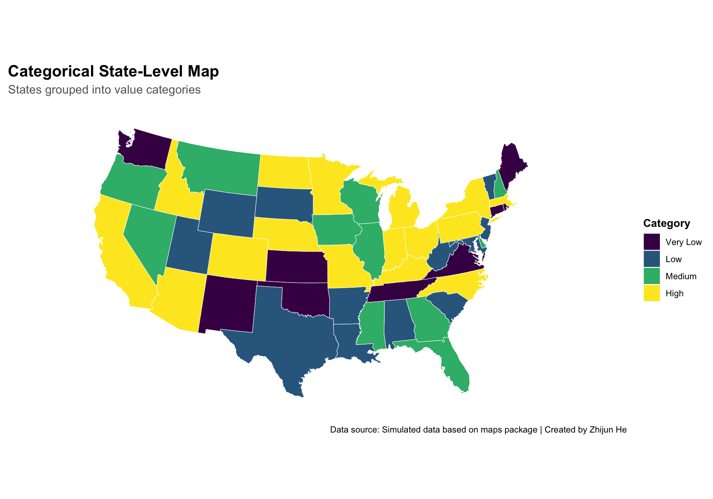
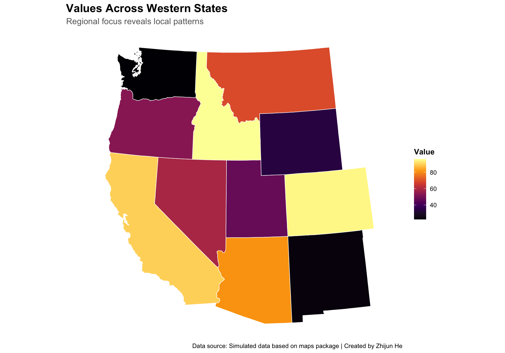
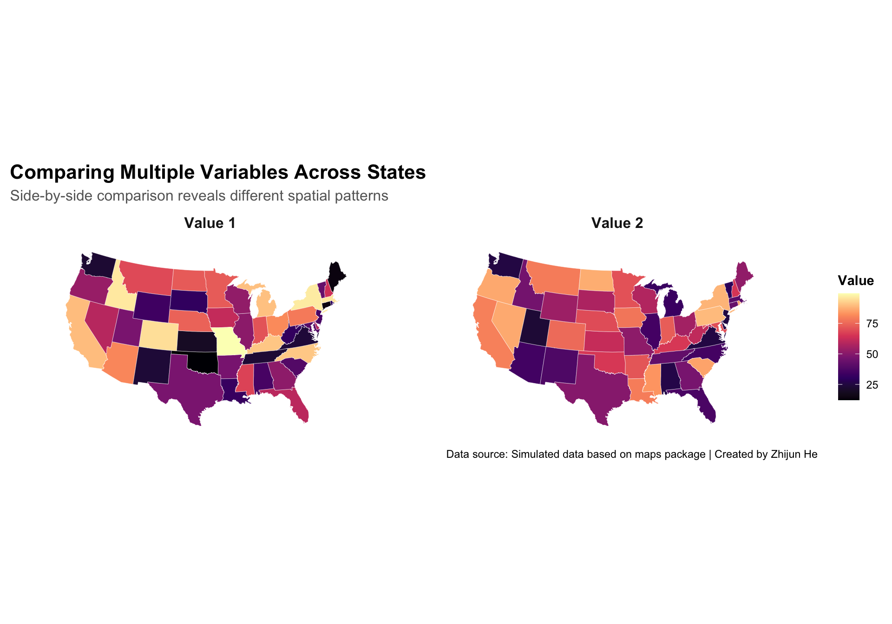
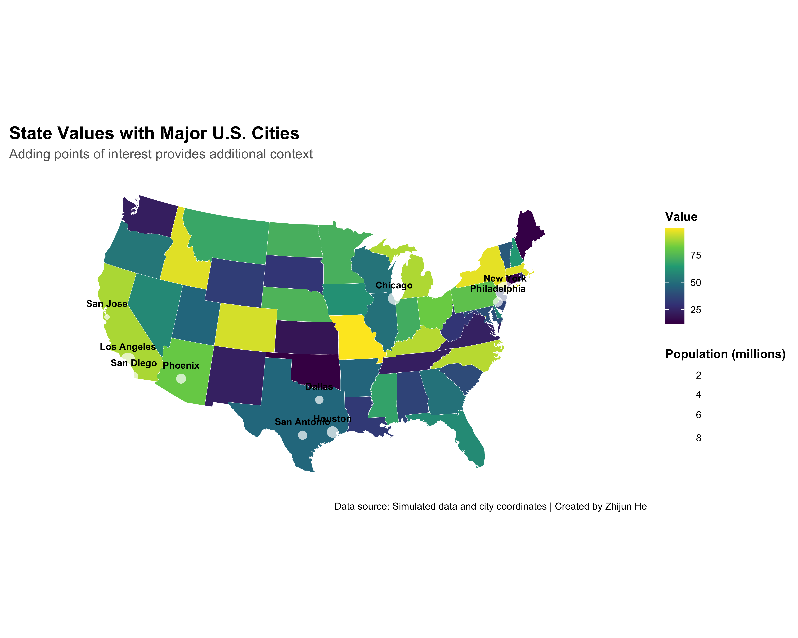
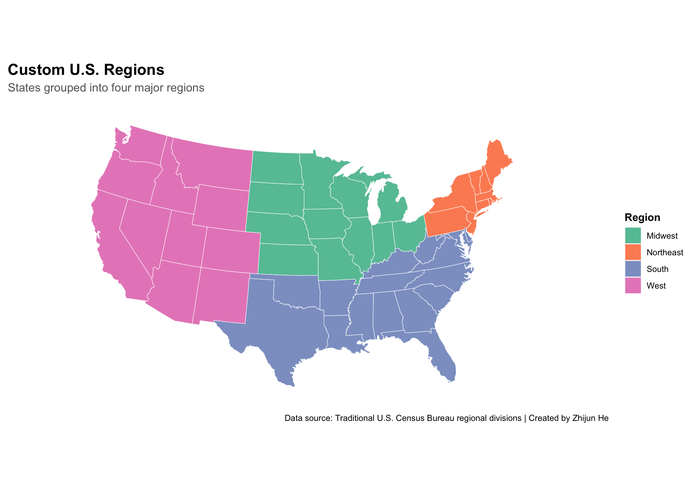

Maps have been humanity’s primary tool for understanding spatial relationships for millennia. From ancient cave paintings to modern interactive dashboards, our desire to visualize geographic patterns remains unchanged. What has evolved dramatically is our ability to create, analyze, and share spatial visualizations that reveal insights hidden within geographic data.
This document demonstrates approaches to creating professional spatial visualizations that effectively communicate geographic patterns and relationships. Through thoughtful design choices and technical implementation, we can transform raw geographic data into compelling visual narratives.
7 Dataset Selection and Preparation
For this demonstration, I’ll use built-in map data from the maps package along with simulated state-level data. This approach doesn’t require internet access or specialized spatial packages.
Code
# Get state boundaries from maps packagestates_map <-map_data("state")# Create simulated state-level dataset.seed(123)state_data <-data.frame(state =unique(states_map$region),value =runif(length(unique(states_map$region)), 10, 100)) # Add categories for visualizationstate_data <- state_data %>%mutate(category =cut( value, breaks =c(0, 30, 50, 70, 100),labels =c("Very Low", "Low", "Medium", "High"),include.lowest =TRUE ) )# Join the data with the mapstates_with_data <-left_join(states_map, state_data, by =c("region"="state"))# Preview the datahead(states_with_data)
The dataset includes boundary coordinates for all US states along with simulated value data that could represent metrics like population, income, or any other state-level statistic. We’ve categorized these values into four groups for easier visualization.
8 Approaches to Spatial Visualization
8.1 Approach 1: Basic Choropleth Map
A choropleth map uses color gradients to represent values across geographic areas. This classic approach provides an immediate visual impression of geographic patterns.
Code
# Create a basic choropleth mapggplot(data = states_with_data, mapping =aes(x = long, y = lat, group = group, fill = value)) +geom_polygon(color ="white", size =0.2) +coord_map("albers", lat0 =39, lat1 =45) +scale_fill_viridis_c(option ="plasma",name ="Value" ) +theme_minimal() +labs(title ="State-Level Choropleth Map",subtitle ="Showing simulated values across US states",caption ="Source: Simulated data" ) +theme(plot.title =element_text(face ="bold", size =16),plot.subtitle =element_text(size =12, color ="gray40"),legend.title =element_text(face ="bold"),panel.grid =element_blank(),axis.text =element_blank(),axis.title =element_blank() )

The choropleth map reveals the distribution of our simulated values across the United States. The continuous color scale helps visualize the gradual changes in values across different states. This type of visualization is particularly effective for showing geographic patterns in a single variable.
8.2 Approach 2: Categorical Choropleth Map
Instead of using a continuous color scale, we can use discrete categories to simplify interpretation.
Code
# Create categorical choropleth mapggplot(data = states_with_data, mapping =aes(x = long, y = lat, group = group, fill = category)) +geom_polygon(color ="white", size =0.2) +coord_map("albers", lat0 =39, lat1 =45) +scale_fill_viridis_d(option ="viridis",name ="Category" ) +theme_minimal() +labs(title ="Categorical State-Level Map",subtitle ="States grouped into value categories",caption ="Source: Simulated data" ) +theme(plot.title =element_text(face ="bold", size =16),plot.subtitle =element_text(size =12, color ="gray40"),legend.title =element_text(face ="bold"),panel.grid =element_blank(),axis.text =element_blank(),axis.title =element_blank() )

The categorical choropleth map simplifies interpretation by grouping states into distinct categories. This approach is particularly useful when specific thresholds or categories are more important than precise values. The discrete color scheme makes it easier to identify which states fall into which category at a glance.
8.3 Approach 3: Regional Analysis
We can focus on specific regions to examine spatial patterns in more detail.
Code
# Define Western stateswestern_states <-c("washington", "oregon", "california", "nevada", "idaho", "montana", "wyoming", "utah", "colorado", "arizona", "new mexico")# Filter to Western regionwestern_data <- states_with_data %>%filter(region %in% western_states)# Create Western regional mapggplot(data = western_data, mapping =aes(x = long, y = lat, group = group, fill = value)) +geom_polygon(color ="white", size =0.3) +coord_map("albers", lat0 =39, lat1 =45) +scale_fill_viridis_c(option ="inferno",name ="Value" ) +theme_minimal() +labs(title ="Values Across Western States",subtitle ="Regional focus reveals local patterns",caption ="Source: Simulated data" ) +theme(plot.title =element_text(face ="bold", size =16),plot.subtitle =element_text(size =12, color ="gray40"),legend.title =element_text(face ="bold"),panel.grid =element_blank(),axis.text =element_blank(),axis.title =element_blank() )

By focusing on a specific region, we can examine local patterns in more detail. This approach is particularly valuable when regional comparisons are more important than national ones, or when the region of interest contains patterns that might be obscured in a national view.
8.4 Approach 4: Multiple Value Visualization
We can create multiple maps to compare different metrics side by side.
Code
# Create a second simulated variableset.seed(456)state_data$value2 <-runif(nrow(state_data), 20, 90)# Join the second value to the map datastates_with_data2 <-left_join( states_map, state_data %>%select(state, value2), by =c("region"="state"))# Combine both datasets for facetingstates_combined <-bind_rows( states_with_data %>%mutate(variable ="Value 1"), states_with_data2 %>%rename(value = value2) %>%mutate(variable ="Value 2"))# Create side-by-side mapsggplot(data = states_combined, mapping =aes(x = long, y = lat, group = group, fill = value)) +geom_polygon(color ="white", size =0.1) +coord_map("albers", lat0 =39, lat1 =45) +facet_wrap(~ variable) +scale_fill_viridis_c(option ="magma",name ="Value" ) +theme_minimal() +labs(title ="Comparing Multiple Variables Across States",subtitle ="Side-by-side comparison reveals different spatial patterns",caption ="Source: Simulated data" ) +theme(plot.title =element_text(face ="bold", size =16),plot.subtitle =element_text(size =12, color ="gray40"),legend.title =element_text(face ="bold"),panel.grid =element_blank(),axis.text =element_blank(),axis.title =element_blank(),strip.text =element_text(face ="bold", size =12) )

Side-by-side maps allow for direct comparison of different variables across the same geography. This approach is particularly valuable when exploring relationships between multiple metrics that might have different spatial patterns. By using the same color scale and geographic boundaries, the visualization makes it easy to identify similarities and differences in the spatial distribution of each variable.
8.5 Approach 5: Adding Points of Interest
We can enhance our map by adding points of interest, such as major cities or specific locations.
Code
# Create data for major citiesmajor_cities <-data.frame(name =c("New York", "Los Angeles", "Chicago", "Houston", "Phoenix", "Philadelphia", "San Antonio", "San Diego", "Dallas", "San Jose"),long =c(-74.0060, -118.2437, -87.6298, -95.3698, -112.0740, -75.1652, -98.4936, -117.1611, -96.7970, -121.8863),lat =c(40.7128, 34.0522, 41.8781, 29.7604, 33.4484, 39.9526, 29.4241, 32.7157, 32.7767, 37.3382),population =c(8.4, 4.0, 2.7, 2.3, 1.7, 1.6, 1.5, 1.4, 1.3, 1.0))# Create enhanced map with citiesggplot() +# Base map layergeom_polygon(data = states_with_data, aes(x = long, y = lat, group = group, fill = value),color ="white", size =0.1) +# City points layergeom_point(data = major_cities,aes(x = long, y = lat, size = population),color ="white", alpha =0.7, shape =16) +# Text labels for citiesgeom_text(data = major_cities,aes(x = long, y = lat, label = name),color ="white", size =3, vjust =-1.5, fontface ="bold") +# Coordinate systemcoord_map("albers", lat0 =39, lat1 =45) +# Color scale for statesscale_fill_viridis_c(option ="viridis",name ="Value" ) +# Size scale for citiesscale_size_continuous(name ="Population (millions)",range =c(2, 8) ) +# Layout and labelstheme_minimal() +labs(title ="State Values with Major U.S. Cities",subtitle ="Adding points of interest provides additional context",caption ="Source: Simulated data | City populations in millions" ) +theme(plot.title =element_text(face ="bold", size =16),plot.subtitle =element_text(size =12, color ="gray40"),legend.title =element_text(face ="bold"),panel.grid =element_blank(),axis.text =element_blank(),axis.title =element_blank() )

Adding points of interest provides valuable context to spatial visualizations. In this case, major cities serve as recognizable landmarks that help orient viewers and can reveal relationships between urban centers and the variable being mapped. The size of each point adds an additional dimension of information (population), creating a richer visualization that combines multiple data elements.
8.6 Approach 6: Custom Regions
Sometimes standard geographic boundaries don’t align with the patterns we want to highlight. We can create custom regions by grouping states into meaningful categories.
Code
# Define custom regionsstate_regions <-data.frame(state =unique(states_map$region),custom_region =case_when(unique(states_map$region) %in%c("maine", "new hampshire", "vermont", "massachusetts", "rhode island", "connecticut", "new york", "new jersey", "pennsylvania") ~"Northeast",unique(states_map$region) %in%c("ohio", "michigan", "indiana", "illinois", "wisconsin", "minnesota", "iowa", "missouri", "north dakota", "south dakota", "nebraska", "kansas") ~"Midwest",unique(states_map$region) %in%c("delaware", "maryland", "virginia", "west virginia", "north carolina", "south carolina", "georgia", "florida", "kentucky", "tennessee", "alabama", "mississippi", "arkansas", "louisiana", "oklahoma", "texas") ~"South",TRUE~"West" ))# Join the region data with the mapstates_with_regions <-left_join( states_map, state_regions,by =c("region"="state"))# Create regional mapggplot(data = states_with_regions, mapping =aes(x = long, y = lat, group = group, fill = custom_region)) +geom_polygon(color ="white", size =0.2) +coord_map("albers", lat0 =39, lat1 =45) +scale_fill_brewer(palette ="Set2",name ="Region" ) +theme_minimal() +labs(title ="Custom U.S. Regions",subtitle ="States grouped into four major regions",caption ="Source: Traditional U.S. Census Bureau regional divisions" ) +theme(plot.title =element_text(face ="bold", size =16),plot.subtitle =element_text(size =12, color ="gray40"),legend.title =element_text(face ="bold"),panel.grid =element_blank(),axis.text =element_blank(),axis.title =element_blank() )

Custom regional groupings allow us to highlight meaningful geographic patterns that might cross state boundaries. This approach is particularly valuable when analyzing phenomena that align with cultural, economic, or ecological regions rather than political boundaries. By color-coding states according to their region, we create a visualization that emphasizes these broader spatial patterns.
9 Design Principles for Effective Spatial Visualization
Creating effective spatial visualizations requires careful consideration of several design principles:
9.1 1. Visual Hierarchy
Establish a clear visual hierarchy by:
Using color intensity to emphasize the most important patterns
Adding boundaries at an appropriate visual weight
Making sure legends and auxiliary elements don’t compete with the main map
9.2 2. Color Selection
Choose colors thoughtfully:
Use sequential color schemes for continuous variables
Use appropriate color breaks that reveal meaningful patterns
Consider cultural associations with colors in your audience
9.3 3. Context and Scale
Provide appropriate context:
Include recognizable boundaries or landmarks for orientation
Consider multiple scales (national, regional, local) if patterns differ
Add labels for key geographic features when necessary
9.4 4. Cognitive Load Management
Help viewers understand complex spatial information:
Use categories or small multiples to simplify complex patterns
Provide clear legends and explanatory text
Consider interactive elements for exploration of complex data
10 Conclusion
Spatial visualization offers powerful tools for understanding geographic patterns in our data. From basic choropleth maps to customized regional visualizations, these approaches reveal insights that would remain hidden in tables or non-spatial charts.
The visualizations in this document have demonstrated various techniques for representing spatial data effectively. Each approach has its strengths and is suited to different types of analysis questions:
Basic choropleth maps provide a clear overview of a single variable across geographic units
Categorical maps simplify complex data into meaningful groups
Regional maps allow detailed exploration of specific areas of interest
Multiple variable maps support comparison of different metrics
Adding points of interest provides context and additional dimensions
Custom regional groupings highlight patterns that cross standard boundaries
The techniques I demonstrated here provide a foundation for creating professional spatial visualizations. As your skills advance, you might explore additional techniques like cartograms, animated maps showing change over time, or 3D terrain visualizations that incorporate elevation data.
11 References
Brewer, C.A. (2020). ColorBrewer: Color Advice for Maps. http://colorbrewer2.org/
Monmonier, M. (2018). How to Lie with Maps. University of Chicago Press.
Wilke, C.O. (2019). Fundamentals of Data Visualization: A Primer on Making Informative and Compelling Figures. O’Reilly Media.
Source Code
---title: "Spatial Vizualization"author: "Zhijun He"date: todayformat: html: code-fold: true theme: flatly toc: true number-sections: true fig-width: 10 fig-height: 7---```{r setup, include=FALSE}knitr::opts_chunk$set(echo = TRUE, message = FALSE, warning = FALSE)library(tidyverse)library(maps)library(ggplot2)library(viridis)```# Introduction to Spatial VisualizationMaps have been humanity's primary tool for understanding spatial relationships for millennia. From ancient cave paintings to modern interactive dashboards, our desire to visualize geographic patterns remains unchanged. What has evolved dramatically is our ability to create, analyze, and share spatial visualizations that reveal insights hidden within geographic data.This document demonstrates approaches to creating professional spatial visualizations that effectively communicate geographic patterns and relationships. Through thoughtful design choices and technical implementation, we can transform raw geographic data into compelling visual narratives.# Dataset Selection and PreparationFor this demonstration, I'll use built-in map data from the maps package along with simulated state-level data. This approach doesn't require internet access or specialized spatial packages.```{r data-preparation}# Get state boundaries from maps packagestates_map <- map_data("state")# Create simulated state-level dataset.seed(123)state_data <- data.frame( state = unique(states_map$region), value = runif(length(unique(states_map$region)), 10, 100)) # Add categories for visualizationstate_data <- state_data %>% mutate( category = cut( value, breaks = c(0, 30, 50, 70, 100), labels = c("Very Low", "Low", "Medium", "High"), include.lowest = TRUE ) )# Join the data with the mapstates_with_data <- left_join(states_map, state_data, by = c("region" = "state"))# Preview the datahead(states_with_data)```The dataset includes boundary coordinates for all US states along with simulated value data that could represent metrics like population, income, or any other state-level statistic. We've categorized these values into four groups for easier visualization.# Approaches to Spatial Visualization## Approach 1: Basic Choropleth MapA choropleth map uses color gradients to represent values across geographic areas. This classic approach provides an immediate visual impression of geographic patterns.```{r choropleth-basic}# Create a basic choropleth mapggplot(data = states_with_data, mapping = aes(x = long, y = lat, group = group, fill = value)) + geom_polygon(color = "white", size = 0.2) + coord_map("albers", lat0 = 39, lat1 = 45) + scale_fill_viridis_c( option = "plasma", name = "Value" ) + theme_minimal() + labs( title = "State-Level Choropleth Map", subtitle = "Showing simulated values across US states", caption = "Source: Simulated data" ) + theme( plot.title = element_text(face = "bold", size = 16), plot.subtitle = element_text(size = 12, color = "gray40"), legend.title = element_text(face = "bold"), panel.grid = element_blank(), axis.text = element_blank(), axis.title = element_blank() )```The choropleth map reveals the distribution of our simulated values across the United States. The continuous color scale helps visualize the gradual changes in values across different states. This type of visualization is particularly effective for showing geographic patterns in a single variable.## Approach 2: Categorical Choropleth MapInstead of using a continuous color scale, we can use discrete categories to simplify interpretation.```{r choropleth-categorical}# Create categorical choropleth mapggplot(data = states_with_data, mapping = aes(x = long, y = lat, group = group, fill = category)) + geom_polygon(color = "white", size = 0.2) + coord_map("albers", lat0 = 39, lat1 = 45) + scale_fill_viridis_d( option = "viridis", name = "Category" ) + theme_minimal() + labs( title = "Categorical State-Level Map", subtitle = "States grouped into value categories", caption = "Source: Simulated data" ) + theme( plot.title = element_text(face = "bold", size = 16), plot.subtitle = element_text(size = 12, color = "gray40"), legend.title = element_text(face = "bold"), panel.grid = element_blank(), axis.text = element_blank(), axis.title = element_blank() )```The categorical choropleth map simplifies interpretation by grouping states into distinct categories. This approach is particularly useful when specific thresholds or categories are more important than precise values. The discrete color scheme makes it easier to identify which states fall into which category at a glance.## Approach 3: Regional AnalysisWe can focus on specific regions to examine spatial patterns in more detail.```{r regional-map}# Define Western stateswestern_states <- c("washington", "oregon", "california", "nevada", "idaho", "montana", "wyoming", "utah", "colorado", "arizona", "new mexico")# Filter to Western regionwestern_data <- states_with_data %>% filter(region %in% western_states)# Create Western regional mapggplot(data = western_data, mapping = aes(x = long, y = lat, group = group, fill = value)) + geom_polygon(color = "white", size = 0.3) + coord_map("albers", lat0 = 39, lat1 = 45) + scale_fill_viridis_c( option = "inferno", name = "Value" ) + theme_minimal() + labs( title = "Values Across Western States", subtitle = "Regional focus reveals local patterns", caption = "Source: Simulated data" ) + theme( plot.title = element_text(face = "bold", size = 16), plot.subtitle = element_text(size = 12, color = "gray40"), legend.title = element_text(face = "bold"), panel.grid = element_blank(), axis.text = element_blank(), axis.title = element_blank() )```By focusing on a specific region, we can examine local patterns in more detail. This approach is particularly valuable when regional comparisons are more important than national ones, or when the region of interest contains patterns that might be obscured in a national view.## Approach 4: Multiple Value VisualizationWe can create multiple maps to compare different metrics side by side.```{r multiple-maps}# Create a second simulated variableset.seed(456)state_data$value2 <- runif(nrow(state_data), 20, 90)# Join the second value to the map datastates_with_data2 <- left_join( states_map, state_data %>% select(state, value2), by = c("region" = "state"))# Combine both datasets for facetingstates_combined <- bind_rows( states_with_data %>% mutate(variable = "Value 1"), states_with_data2 %>% rename(value = value2) %>% mutate(variable = "Value 2"))# Create side-by-side mapsggplot(data = states_combined, mapping = aes(x = long, y = lat, group = group, fill = value)) + geom_polygon(color = "white", size = 0.1) + coord_map("albers", lat0 = 39, lat1 = 45) + facet_wrap(~ variable) + scale_fill_viridis_c( option = "magma", name = "Value" ) + theme_minimal() + labs( title = "Comparing Multiple Variables Across States", subtitle = "Side-by-side comparison reveals different spatial patterns", caption = "Source: Simulated data" ) + theme( plot.title = element_text(face = "bold", size = 16), plot.subtitle = element_text(size = 12, color = "gray40"), legend.title = element_text(face = "bold"), panel.grid = element_blank(), axis.text = element_blank(), axis.title = element_blank(), strip.text = element_text(face = "bold", size = 12) )```Side-by-side maps allow for direct comparison of different variables across the same geography. This approach is particularly valuable when exploring relationships between multiple metrics that might have different spatial patterns. By using the same color scale and geographic boundaries, the visualization makes it easy to identify similarities and differences in the spatial distribution of each variable.## Approach 5: Adding Points of InterestWe can enhance our map by adding points of interest, such as major cities or specific locations.```{r points-of-interest}# Create data for major citiesmajor_cities <- data.frame( name = c("New York", "Los Angeles", "Chicago", "Houston", "Phoenix", "Philadelphia", "San Antonio", "San Diego", "Dallas", "San Jose"), long = c(-74.0060, -118.2437, -87.6298, -95.3698, -112.0740, -75.1652, -98.4936, -117.1611, -96.7970, -121.8863), lat = c(40.7128, 34.0522, 41.8781, 29.7604, 33.4484, 39.9526, 29.4241, 32.7157, 32.7767, 37.3382), population = c(8.4, 4.0, 2.7, 2.3, 1.7, 1.6, 1.5, 1.4, 1.3, 1.0))# Create enhanced map with citiesggplot() + # Base map layer geom_polygon(data = states_with_data, aes(x = long, y = lat, group = group, fill = value), color = "white", size = 0.1) + # City points layer geom_point(data = major_cities, aes(x = long, y = lat, size = population), color = "white", alpha = 0.7, shape = 16) + # Text labels for cities geom_text(data = major_cities, aes(x = long, y = lat, label = name), color = "white", size = 3, vjust = -1.5, fontface = "bold") + # Coordinate system coord_map("albers", lat0 = 39, lat1 = 45) + # Color scale for states scale_fill_viridis_c( option = "viridis", name = "Value" ) + # Size scale for cities scale_size_continuous( name = "Population (millions)", range = c(2, 8) ) + # Layout and labels theme_minimal() + labs( title = "State Values with Major U.S. Cities", subtitle = "Adding points of interest provides additional context", caption = "Source: Simulated data | City populations in millions" ) + theme( plot.title = element_text(face = "bold", size = 16), plot.subtitle = element_text(size = 12, color = "gray40"), legend.title = element_text(face = "bold"), panel.grid = element_blank(), axis.text = element_blank(), axis.title = element_blank() )```Adding points of interest provides valuable context to spatial visualizations. In this case, major cities serve as recognizable landmarks that help orient viewers and can reveal relationships between urban centers and the variable being mapped. The size of each point adds an additional dimension of information (population), creating a richer visualization that combines multiple data elements.## Approach 6: Custom RegionsSometimes standard geographic boundaries don't align with the patterns we want to highlight. We can create custom regions by grouping states into meaningful categories.```{r custom-regions}# Define custom regionsstate_regions <- data.frame( state = unique(states_map$region), custom_region = case_when( unique(states_map$region) %in% c("maine", "new hampshire", "vermont", "massachusetts", "rhode island", "connecticut", "new york", "new jersey", "pennsylvania") ~ "Northeast", unique(states_map$region) %in% c("ohio", "michigan", "indiana", "illinois", "wisconsin", "minnesota", "iowa", "missouri", "north dakota", "south dakota", "nebraska", "kansas") ~ "Midwest", unique(states_map$region) %in% c("delaware", "maryland", "virginia", "west virginia", "north carolina", "south carolina", "georgia", "florida", "kentucky", "tennessee", "alabama", "mississippi", "arkansas", "louisiana", "oklahoma", "texas") ~ "South", TRUE ~ "West" ))# Join the region data with the mapstates_with_regions <- left_join( states_map, state_regions, by = c("region" = "state"))# Create regional mapggplot(data = states_with_regions, mapping = aes(x = long, y = lat, group = group, fill = custom_region)) + geom_polygon(color = "white", size = 0.2) + coord_map("albers", lat0 = 39, lat1 = 45) + scale_fill_brewer( palette = "Set2", name = "Region" ) + theme_minimal() + labs( title = "Custom U.S. Regions", subtitle = "States grouped into four major regions", caption = "Source: Traditional U.S. Census Bureau regional divisions" ) + theme( plot.title = element_text(face = "bold", size = 16), plot.subtitle = element_text(size = 12, color = "gray40"), legend.title = element_text(face = "bold"), panel.grid = element_blank(), axis.text = element_blank(), axis.title = element_blank() )```Custom regional groupings allow us to highlight meaningful geographic patterns that might cross state boundaries. This approach is particularly valuable when analyzing phenomena that align with cultural, economic, or ecological regions rather than political boundaries. By color-coding states according to their region, we create a visualization that emphasizes these broader spatial patterns.# Design Principles for Effective Spatial VisualizationCreating effective spatial visualizations requires careful consideration of several design principles:## 1. Visual HierarchyEstablish a clear visual hierarchy by:- Using color intensity to emphasize the most important patterns- Adding boundaries at an appropriate visual weight- Making sure legends and auxiliary elements don't compete with the main map## 2. Color SelectionChoose colors thoughtfully:- Use sequential color schemes for continuous variables- Consider colorblind-friendly palettes (like viridis)- Use appropriate color breaks that reveal meaningful patterns- Consider cultural associations with colors in your audience## 3. Context and ScaleProvide appropriate context:- Include recognizable boundaries or landmarks for orientation- Consider multiple scales (national, regional, local) if patterns differ- Add labels for key geographic features when necessary## 4. Cognitive Load ManagementHelp viewers understand complex spatial information:- Use categories or small multiples to simplify complex patterns- Provide clear legends and explanatory text- Consider interactive elements for exploration of complex data# ConclusionSpatial visualization offers powerful tools for understanding geographic patterns in our data. From basic choropleth maps to customized regional visualizations, these approaches reveal insights that would remain hidden in tables or non-spatial charts.The visualizations in this document have demonstrated various techniques for representing spatial data effectively. Each approach has its strengths and is suited to different types of analysis questions:- Basic choropleth maps provide a clear overview of a single variable across geographic units- Categorical maps simplify complex data into meaningful groups- Regional maps allow detailed exploration of specific areas of interest- Multiple variable maps support comparison of different metrics- Adding points of interest provides context and additional dimensions- Custom regional groupings highlight patterns that cross standard boundariesThe techniques I demonstrated here provide a foundation for creating professional spatial visualizations. As your skills advance, you might explore additional techniques like cartograms, animated maps showing change over time, or 3D terrain visualizations that incorporate elevation data.# ReferencesBrewer, C.A. (2020). *ColorBrewer: Color Advice for Maps*. http://colorbrewer2.org/Monmonier, M. (2018). *How to Lie with Maps*. University of Chicago Press.Wilke, C.O. (2019). *Fundamentals of Data Visualization: A Primer on Making Informative and Compelling Figures*. O'Reilly Media.